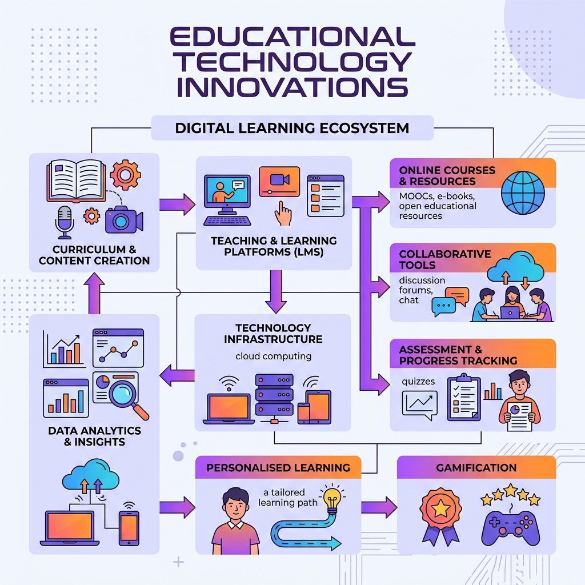
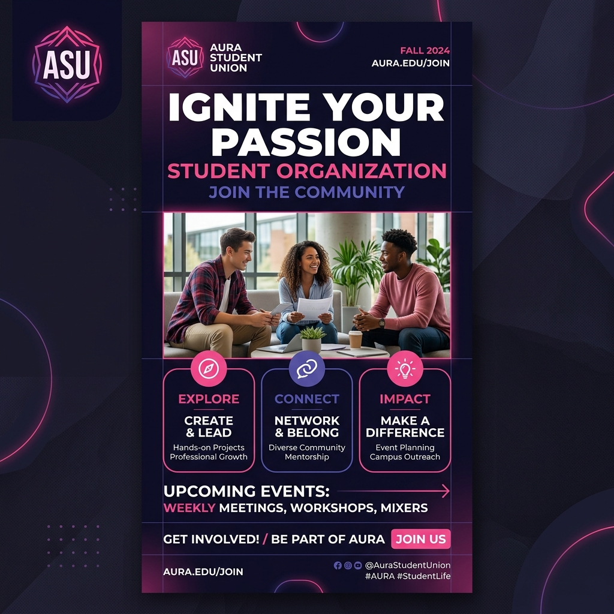

Yash Akbar Raihan
Mengintegrasikan kreativitas desain instruksional dengan keahlian pengembangan web modern untuk menciptakan solusi pembelajaran digital yang inovatif dan efektif.
Menggabungkan Edukasi & Teknologi
Lulusan S1 Teknologi Pendidikan yang berpengalaman dalam menggabungkan kreativitas dan teknologi untuk merancang solusi edukasi yang efektif.
Saya memiliki keahlian dalam pengembangan website responsif, produksi media visual, desain grafis, dan analisis data. Fokus saya berpusat pada pengembangan kurikulum, desain pembelajaran interaktif, serta implementasi teknologi pendidikan. Saya siap memberikan kontribusi proaktif, baik secara mandiri maupun berkolaborasi dalam tim, guna meningkatkan kualitas program pembelajaran digital.
Desain Pembelajaran
Merancang materi, Rencana Pelaksanaan Pembelajaran (RPP), dan kurikulum interaktif yang meningkatkan pemahaman konsep.
Web Development
Mengembangkan platform pembelajaran, landing page, dan mengelola database digital library secara responsif.
Desain Visual & Media
Membuat materi grafis edukatif, infografis, video pembelajaran interaktif, serta layout promosi sosial media.
Analisis Data
Mengolah data retail dan performa akademik menggunakan SQL & Python, lalu memvisualisasikannya di Looker Studio.
Riwayat Pengalaman
Tutor
Algorithmics Surabaya Branch- Mengajar pemrograman Python dari tingkat dasar hingga profesional kepada siswa dari berbagai latar belakang, mencakup konsep inti seperti variabel, fungsi, perulangan, hingga pengembangan proyek lanjutan.
- Mentoring scripting Roblox menggunakan bahasa Lua, mencakup logika game, GUI interaktif, dan pengaturan fitur yang kompleks.
- Menerapkan pendekatan pembelajaran berbasis proyek (project-based approach), membantu siswa membangun portofolio riil yang relevan dengan kebutuhan industri.
- Menciptakan lingkungan belajar yang kolaboratif, berfokus pada pengembangan logika berpikir dan kemampuan pemecahan masalah (problem-solving).
Learning Design Internship
Singapore Interculture School Kelapa Gading Jakarta Utara- Merancang rencana pelaksanaan pembelajaran (lesson plans) dan desain instruksional untuk satu term akademis guna meningkatkan keterlibatan siswa secara efektif.
- Mengembangkan materi pendukung pembelajaran dan memproduksi video instruksional interaktif yang berhasil memperkuat pemahaman konsep materi siswa.
- Mendukung proses pengajaran di kelas secara langsung dan mendesain platform web pembelajaran interaktif untuk meningkatkan fleksibilitas serta aksesibilitas belajar siswa.
Internship Website Developer & Graphic Design
Perwakilan BKKBN Provinsi Jawa Timur Surabaya- Mengelola website perpustakaan digital instansi, memastikan aksesibilitas pengguna yang optimal serta mempermudah sistem pencarian koleksi pustaka.
- Membuat desain materi edukasi visual seperti infografis dan konten interaktif yang memperkuat penyampaian pesan edukasi BKKBN serta meningkatkan interaksi audiens secara digital.
Wakil Ketua (2023/2024) & Ketua (2024/2025)
Resimen Mahasiswa UNESA- Memimpin pelaksanaan program pendidikan dasar dan khusus bagi anggota baru untuk membentuk kualitas kepemimpinan, disiplin, dan keahlian taktis.
- Mendorong pencapaian prestasi anggota hingga mendapatkan penghargaan prestisius, termasuk peringkat 3 besar penembak terbaik dalam kompetisi regional.
Staf Hubungan Media & Informasi (Medinfo)
BEM Fakultas Ilmu Pendidikan UNESA- Bertindak sebagai moderator dalam webinar pelatihan Program Kreativitas Mahasiswa (PKM), memfasilitasi pengembangan minat riset dan pengabdian masyarakat mahasiswa.
- Merancang desain grafis materi publikasi dan layout media sosial BEM, meningkatkan jangkauan keterbacaan serta visibilitas program kerja organisasi.
Keahlian & Tools
Teknis & Desain
Kepemimpinan & Pengembangan
My Project

Website Pembelajaran Anak-anak
Platform pembelajaran interaktif yang membantu anak-anak belajar dengan cara yang seru dan menyenangkan. Melalui materi yang mudah dipahami, latihan interaktif, dan aktivitas kreatif, anak-anak dapat mengembangkan keterampilan berpikir, kreativitas, serta mengenal dasar-dasar teknologi dan pemrograman sejak dini.

E-Learning Interaktif UNESA
Merancang dan mengembangkan modul pembelajaran berbasis web interaktif bagi siswa SMK jurusan Multimedia yang menyediakan materi, latihan, dan media pembelajaran digital untuk mendukung pengalaman belajar yang lebih menarik, fleksibel, dan efektif.

Infografis Teknologi Pendidikan
Materi visual informatif yang menjelaskan integrasi teknologi dalam desain instruksional untuk meningkatkan efektivitas belajar.

Desain Media Sosial Organisasi
Serangkaian materi publikasi dan layout promosi digital profesional untuk media sosial Resimen Mahasiswa dan BEM FIP UNESA.
Pendidikan & Sertifikasi
Pendidikan Formal
S1 Teknologi Pendidikan
Universitas Negeri Surabaya (UNESA) Agustus 2020 - Juni 2024- Berfokus pada evaluasi program pelatihan serta perancangan media pembelajaran berbasis teknologi yang adaptif.
- Aktif berorganisasi di BEM Fakultas Ilmu Pendidikan dan memimpin Resimen Mahasiswa UNESA sebagai Ketua & Wakil Ketua.
- Mengelola website profil instansi serta sistem e-journal untuk program studi S1, S2, dan S3 Teknologi Pendidikan UNESA.
- Menjadi anggota tim akreditasi untuk program studi S1 Teknologi Pendidikan.
- Proyek Unggulan: Pengembangan sistem e-learning interaktif dan pembuatan video media pembelajaran berbasis multimedia.
Sertifikasi & Kursus
Data Analysis (Online Course)
Februari 2023 - Juni 2023- Menganalisis data transaksi perusahaan retail dan merumuskan rekomendasi bisnis berbasis data.
- Melakukan pemrosesan dan query data menggunakan bahasa SQL & Python.
- Menginterpretasikan hasil analisis ke dalam dashboard visual interaktif Looker Studio.
Adobe Professional Certification
Maret 2022- Membuat desain poster dan materi promosi digital profesional menggunakan Adobe Photoshop.
- Mengembangkan konten visual untuk publikasi sosial media dan website dengan fokus pada personal branding.
- Menerapkan prinsip desain grafis dalam proyek kampanye edukasi visual.
JavaScript & HTML/CSS (Online Course)
Mei 2021 - Oktober 2021- Mengembangkan logika pemrograman dasar dengan membuat aplikasi kalkulator berbasis web (JavaScript).
- Membangun layout responsive landing page dari nol menggunakan HTML5 dan CSS3.
Creating Learning Website Using Google Sites
Oktober 2021- Merancang platform website pembelajaran multimedia yang terintegrasi dengan Google Workspace dan asset visual dari Adobe Photoshop.
Hubungi Saya
Informasi Kontak
Apakah Anda tertarik untuk berkolaborasi, mendiskusikan peluang kerja, atau sekadar ingin bertukar pikiran mengenai teknologi pembelajaran? Jangan ragu untuk menghubungi saya!